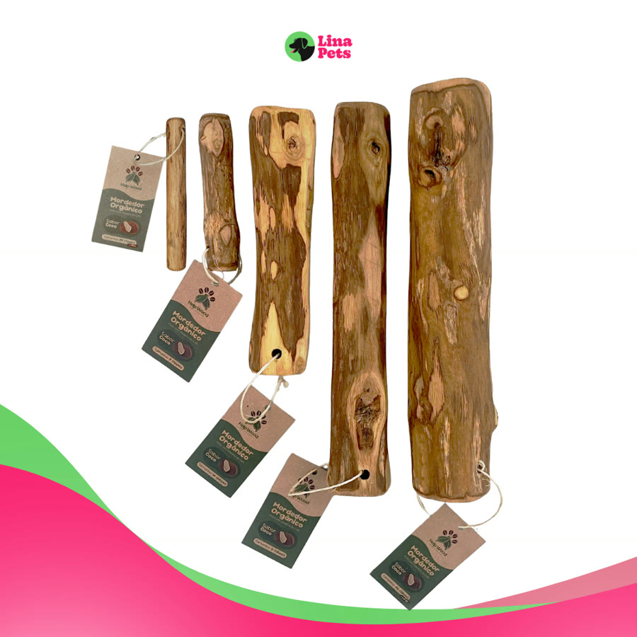
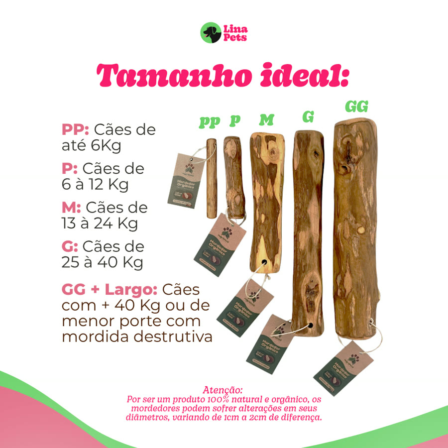
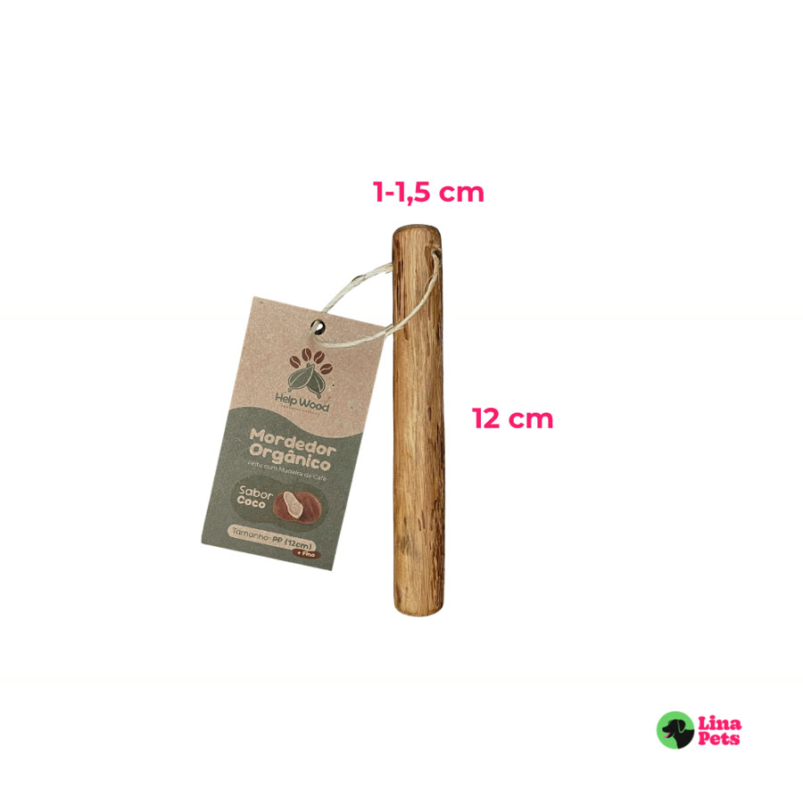
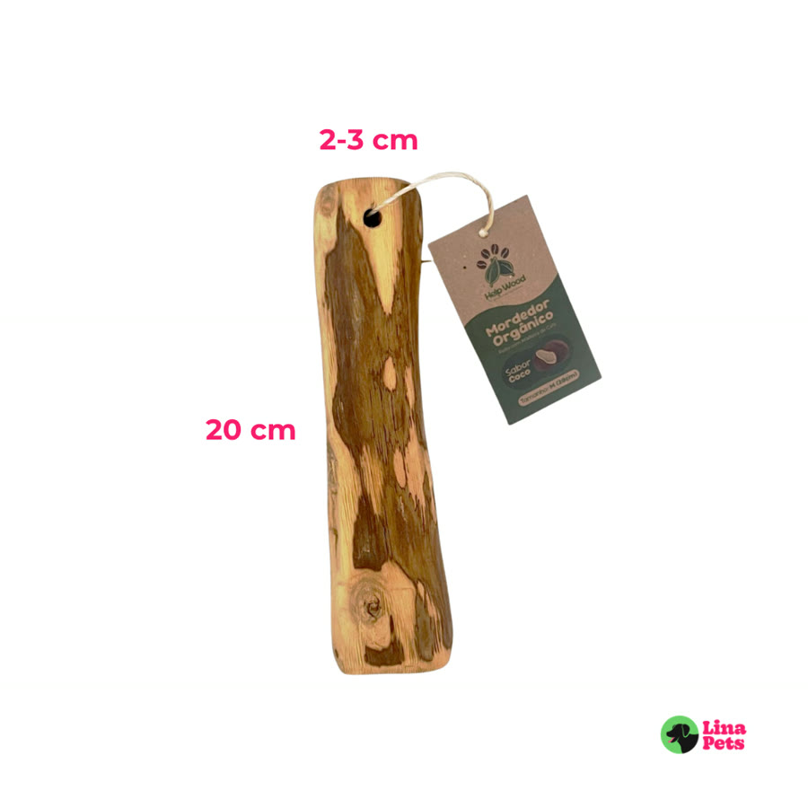
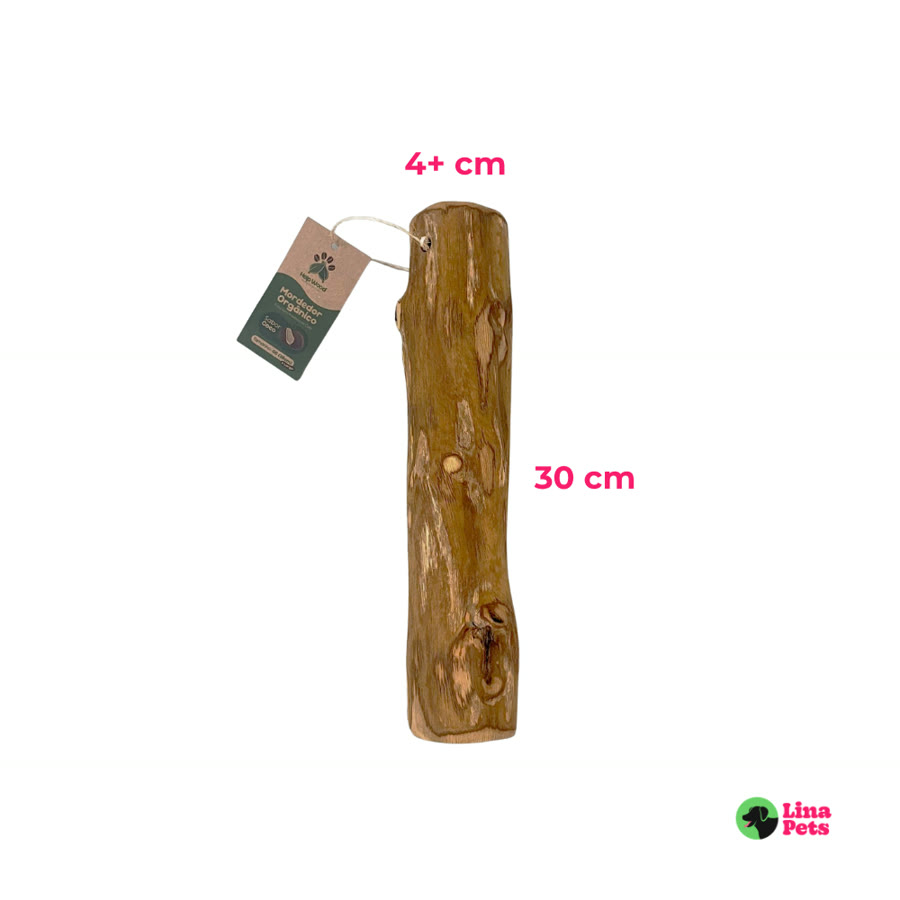

Achado nº 33
Amiga, essa é pra você que tem cachorro roendo chinelo e pé de cadeira.
Mordedor natural de madeira de café para cachorro
★ 4,9 · mais de 10 mil avaliações na Shopee





O que diz a página oficial do produto
- É um mordedor feito de um pedaço de madeira de cafeeiro natural, com óleo de coco (composição: madeira de café e óleo de coco)
- Tem cantos arredondados e a madeira é hidratada, segundo o anúncio
- Vem em 5 tamanhos: PP e P com 12 cm de comprimento, M com 20 cm, G e GG com 30 cm; quanto maior, mais grosso
- Segundo a tabela do anúncio, o PP é para cães de até 6 kg, o P de 6 a 12 kg, o M de 13 a 24 kg, o G de 25 a 40 kg e o GG para cães de mais de 40 kg ou que mordem muito
- Segundo o anúncio, a madeira não solta farpas; ao roer, saem fibras pequenas
- Segundo o anúncio, é um brinquedo e não um alimento: a loja recomenda acompanhar a brincadeira e tirar o toco quando ele ficar com menos de 5 cm
- Na Shopee, tem nota 4,9 com mais de 10 mil avaliações e mais de 20 mil vendidos
Link de afiliado: se você comprar por ele, a Achadaria pode receber uma comissão, sem custo extra para você. Preço, estoque e entrega são da loja e podem mudar; confira lá antes de comprar.